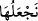
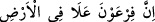
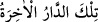

kelimesinin] sıfattır. Haberi ise, “__WORD__ (veririz)” ile başlayan cümledir.
“Biz onu yeryüzünde böbürlenmeyi ve bozgunculuğu arzulamayan kimselere
veririz.”
“__WORD__; büyüklük, zorbalık ve tasallut gibi mânâlara gelir. Nitekim Firavun hakkında bu
sûrenin başlarında Allah Teâlâ şöyle buyurmuştu: “ __WORD__ (Firavun,
(Mısır) toprağında gerçekten azmıştı...)” “__WORD__ (fesat)”; insanlara zulüm ve düşmanlık
yapmak demektir. Nitekim Kârûn’un fesad çıkarmayı arzulaması sebebiyle Allah Teâlâ,
onun için bir nasihatçının diliyle şöyle buyurmuştur: “Yeryüzünde bozgunculuğu
arzulama.” Âhiret yurduyla ilgili vaadin, böbürlenmenin ve bozgunculuğun
terkedilmesine değil de, bunları irâde etmemeye bağlanmasında, bu iki işten onları daha
çok sakındırma vardır.
“(En güzel) âkıbet,” fesad, zulûm ve büyüklenme gibi kötü huylardan sakınan;
Allah’ın râzı olmayacağı kötü fiil ve sözlerden kaçınan “takvâ sâhiplerinindir.”
Rivâyete göre Ali (r.a.) demiştir ki: “Bir kimse ayakkabısının bağının,
arkadaşınınkinden daha iyi olmasını ister ve bundan hoşlanırsa o kimse de bu âyetin
mânâsının şümûlüne girer.”
Yani, hoşlandığı elbise ve giysiler onu büyüklenmeye ve tekebbüre sevkederse, o da
yeryüzünde fesat ve bozgunculuğu isteyenlerden olmuş olur.
Yine rivâyete göre Ali (r.a.) vâli olduğu halde caddelerde yalnızca yürür; yolunu
şaşıranlara yol gösterir, zayıflara yardım ederdi. Satıcılara ve bakkallara uğrar,
Kur’ân’dan “__WORD__ ile başlayan bu âyeti okuyarak söze başlar ve şöyle derdi:
Bu âyet adâlet sâhibi ve tevazu ehli vâliler ile güç ve kuvvet sâhibi diğer insanlar
hakkında nâzil olmuştur. Ömer b. Abdülaziz’in bu âyeti kerîmeyi ruhunu teslim
edinceye kadar sık sık tekrar ettiği rivâyet edilir.
Rasûlullah (s.a.), koyun sağar, merkebe biner, kölelerin dâvetine icâbet eder ve fakir
ve miskinlerle otururdu.
Bazı büyükler demiştir ki: Yeryüzünde büyüklenmekten ve fesat istemekten sakın;
mahviyet sâhibi, kırık gönüllü (inkisâr-ı kalb), tahammüllü ve sabırlı olmaya devam et.
Çünkü Allah’a yükselen “Lâ ilâhe ilallâh” kelimendir, sözündür (senin fesat ve
tekebbürün değil). Zirâ bunun üstünde sadece Hak Sübhânehû ve Teâlâ vardır. Böylece
Allah, insanların kalblerinde sana karşı bir ihtiram duygusu yaratarak seni rızıklandırır.
Bunun izahı şudur: Allah seni yerden (topraktan) yaratmış ve meydana getirmiştir.
Dolayısıyla aslına baş kaldırman sana yakışmaz. Nefsin seni akranlarına karşı üstün
görünmeye sevkettiği halde zâhidlik, âbidlik ve cömertlik taslamaktan sakın. Zira bu
gibi hâller, yeryüzünde kibirlenme duygusundan kaynaklanır.
Bir mahlûk diğer bir mahlûka karşı ancak Hakk’ın maiyyetinden perdeli (hicâblı)
olduğunda üstünlük taslayabilir. Şâyet (hicâbı kalkıp) diğer mahlukun Allah’la beraber